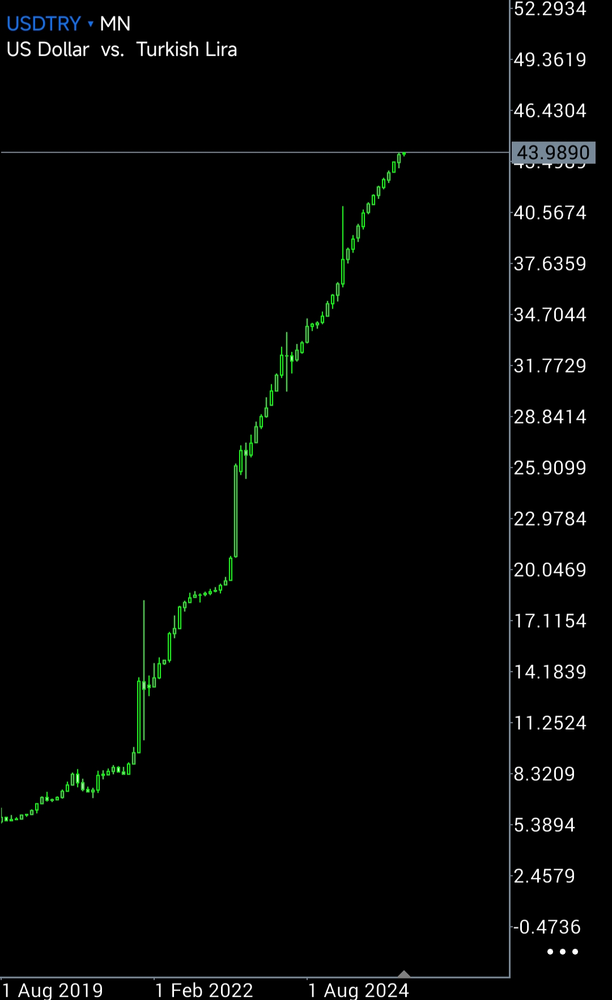

Bir Fiyat Analizi

Bu grafik yalnızca bir kur serisi değildir. Bir ekonomik sistemin uzun vadeli davranış kaydıdır.
Uzun vadeli USD/TRY grafiği incelendiğinde hareketin lineer bir değer kaybı olmadığı görülür. Hareketin eğimi zaman içinde artmakta, oynaklık genişlemekte ve fiyat davranışı sıçramalı bir yapı kazanmaktadır. Bu tür davranışlar sistemlerde faz değişimine işaret eder.
Fiyat sistem davranışının kaydıdır.
Politikalar değişir.
Programlar değişir.
Merkez bankaları değişir.
Fiyat hepsini kaydeder.
Bu nedenle bir ekonomiyi anlamanın en sade yolu bir analist için şudur: Fiyata bakmak.
Fiyat veridir.
Ve fiyat sistemdeki tüm bilgiyi taşır.
Bir fiyat serisi yalnızca bir değeri göstermez. Bir sistemin nasıl davrandığını gösterir.
Ekonomiler bir sistemdir.
Her sistem gibi üç kuvvet üretir:
basınç
sürtünme
zaman maliyeti
Basınç birikir.
Sürtünme artar.
Zaman geri gelmez.
Bu üç kuvvet birlikte çalıştığında sistemler belirli bir denge içinde hareket eder.
Ancak basınç uzun süre biriktiğinde ve sürtünme arttığında sistem eski dengeyi koruyamaz.
O noktada sistem faz değiştirir.
Uzun vadeli USD/TRY fiyat grafiği bu açıdan incelendiğinde sıradan bir değer kaybı görülmez.
Grafik bize başka bir şey gösterir.
Hareketin eğimi değişmiştir.
Dalgalanmaların genliği büyümüştür.
Fiyat davranışı sıçramalı hale gelmiştir.
Bu tür davranışlar genellikle tek bir politika hatasının sonucu değildir.
Bu tür davranışlar bir sistemin denge mekanizmasının zayıfladığını gösterir.
Başka bir ifadeyle: Sistem artık fiyatları sabitleyen bir referans üretmemektedir.
Bir ekonomik sistemde faz değişimleri genellikle fiyatları sabitleyen referans mekanizmasının zayıflamasıyla ortaya çıkar.
İktisatta bu referans mekanizmasına nominal çıpa denir.
Bir ekonomide fiyatlar yalnızca arz ve talep tarafından belirlenmez.
Fiyatların arkasında aynı zamanda bir referans sistemi bulunur.
Bu referans sistemi ekonomik aktörlere şunu söyler:
Sözleşmeler geçerlidir.
Kurallar kalıcıdır.
Beklentiler tamamen keyfi değildir.
Bu referans ortadan kalktığında fiyatlar yalnızca ekonomik değişkenleri değil aynı zamanda güven kaybını da yansıtmaya başlar.
Ve fiyat davranışı daha oynak, daha sıçramalı ve daha yönlü hale gelir.
USD/TRY grafiğinde gözlenen uzun vadeli yapı tam olarak bu davranışı göstermektedir.
Ekonomide bu referansı sağlayan mekanizmaya nominal çıpa denir.
Nominal çıpa fiyatların, sözleşmelerin ve beklentilerin dayandığı temel güven unsurudur.
Nominal çıpa güçlü olduğunda ekonomik aktörler geleceği tahmin etmeye çalışmaz. Kurallara güvenir.
Nominal çıpa zayıfladığında ise sistem farklı davranmaya başlar.
Fiyatlar yalnızca ekonomik değişkenleri değil aynı zamanda kurumsal güven seviyesini de taşır.
Türkiye ekonomisinin uzun vadeli fiyat davranışı bu açıdan okunduğunda ortaya çıkan tablo şudur:
Sorun yalnızca enflasyon değildir.
Sorun yalnızca kur politikası değildir.
Sorun nominal çıpa eksikliğidir.
Nominal çıpa her ekonomide aynı değildir.
Bazı ekonomilerde bu çıpa para politikasıdır. Bazılarında enflasyon hedefidir. Bazılarında ise kur rejimidir.
Ancak bir nominal çıpanın çalışabilmesi için tek bir koşul vardır: Ekonomik aktörlerin o çıpaya inanması gerekir.
İnanılmayan bir çıpa çıpa değildir. Sadece bir politika beyanıdır.
Türkiye ekonomisinin son yıllardaki fiyat davranışı bu açıdan incelendiğinde şu görülür:
Para politikası tek başına nominal çıpa üretmemektedir.
Faiz kararları sık değişmektedir. Politika çerçevesi sık yeniden tanımlanmaktadır. Merkez bankası yönelimleri dönemsel olarak farklılaşmaktadır.
Bu durum ekonomik aktörlerin beklentilerini istikrarlı bir referansa bağlamasını zorlaştırmaktadır.
Kur rejimi de benzer bir rol üstlenememektedir.
Kur zaman zaman baskılanmakta, zaman zaman serbest bırakılmakta, zaman zaman politika aracı olarak kullanılmaktadır.
Bu nedenle kur da kalıcı bir referans üretmemektedir.
Bu noktada sistem başka bir çıpa aramaya başlar.
Ekonomik sistemlerin en temel çıpası ise aslında para değildir. Sözleşmelerdir.
Bir ekonomide sözleşmeler güvenilir ise:
Fiyatlar referans bulur.
Beklentiler sabitlenir.
Uzun vadeli kararlar mümkün hale gelir.
Sözleşmelerin güvenilir olmadığı bir sistemde ise ekonomik aktörler sürekli olarak kendilerini korumaya çalışır.
Bu da fiyat davranışını değiştirir.
Sözleşmeler kısalır.
Fiyatlar daha sık güncellenir.
Risk primleri yükselir.
Ve sistem giderek daha yüksek oynaklık üretir.
Türkiye ekonomisinde fiyat davranışı tam olarak bu tür bir sistem davranışına işaret etmektedir.
Bu nedenle Türkiye için gerçek nominal çıpa para politikası değildir.
Kur rejimi de değildir.
Türkiye ekonomisinin ihtiyaç duyduğu nominal çıpa sözleşme güvenliğidir.
Nominal çıpa sözleşme güvenliği olduğunda ekonomik politika da bu çıpayı destekleyecek şekilde tasarlanmalıdır.
Ekonomik sistemlerde güven beyanlarla değil, davranışlarla oluşur.
Bu nedenle nominal çıpa oluşturmanın yolu yeni araçlar üretmek değil, sistem davranışını tutarlı hale getirmektir.
Bu çerçevede üç temel ilke ortaya çıkar.
— Kur Müdahalesizliği
Döviz kuru bir ekonomide yalnızca bir fiyat değildir. Aynı zamanda risk algısının ve güven seviyesinin de göstergesidir.
Kur sürekli müdahalelerle yönetildiğinde fiyat sinyali bozulur.
Fiyat sinyali bozulduğunda ise ekonomik aktörler gerçek risk seviyesini okuyamaz.
Bu nedenle nominal çıpa oluşturulmak isteniyorsa kur fiyatının serbest oluşmasına izin verilmelidir.
Kısa vadede bu durum dalgalanmalar yaratabilir.
Ancak fiyat sinyali netleştikçe ekonomik sistem yeni dengeyi daha hızlı bulur.
— Faizin Piyasa Tarafından Belirlenmesi
Faiz bir politika aracı olduğu kadar aynı zamanda bir piyasa fiyatıdır.
Tasarruf ile yatırım arasındaki dengeyi gösterir.
Faiz piyasanın ürettiği bir fiyat olmaktan çıktığında ekonomik sistemde bilgi kaybı oluşur.
Bu nedenle politika faizinin belirlenmesi sürecinde temel referans piyasa faizidir.
Başka bir ifadeyle: Piyasa faizi okunur. Politika faizi bu fiyatın yansıması olarak belirlenir.
Bu yaklaşım para politikasını piyasa davranışıyla uyumlu hale getirir.
— Mali Disiplin
Nominal çıpanın kalıcı olabilmesi için kamu maliyesinin bu çerçeveyi desteklemesi gerekir.
Maliye politikası fiyat sistemine karşı çalıştığında ekonomik aktörlerin güven üretmesi mümkün değildir.
Bu nedenle maliye politikasının temel rolü şudur: Sistem üzerindeki belirsizliği azaltmak.
Bu da ancak öngörülebilir ve disiplinli bir maliye politikasıyla mümkündür.
Bu üç ilke birlikte çalıştığında ekonomik sistem yeni bir denge üretmeye başlar.
İlk aşamada kur ve enflasyon dalgalanmaları görülebilir.
Ancak sistem yeni referansına alıştıkça fiyat davranışı da değişir.
Yaklaşık bir yıl içinde ekonomik aktörler yeni çıpaya göre hareket etmeye başlar.
Ve fiyat sistemi yeniden denge üretir.
Türkiye ekonomisinin bugünkü davranışı yalnızca enflasyonla açıklanamaz.
Enflasyon bir sonuçtur.
Fiyat davranışı daha derin bir soruna işaret etmektedir.
Uzun vadeli fiyat hareketi incelendiğinde görülen şey sürekli değer kaybı değildir. Görülen şey bir denge kaybıdır.
Ekonomik sistemler belirli bir referans etrafında çalışır.
Bu referans ortadan kalktığında fiyatlar yalnızca ekonomik değişkenleri değil aynı zamanda belirsizliği ve güven kaybını da taşımaya başlar.
Türkiye ekonomisinin son yıllardaki fiyat davranışı tam olarak böyle bir sistem davranışına işaret etmektedir.
Sorun para politikasının teknik araçlarında değildir. Sorun kur seviyesinde de değildir. Sorun sistemin etrafında toplanacağı bir nominal çıpanın bulunmamasıdır.
Nominal çıpa kurallarla oluşur.
Ve en temel kural şudur: Sözleşmeler geçerlidir.
Sözleşmelerin güvenilir olduğu bir ekonomide fiyatlar yeniden referans bulur. Beklentiler sabitlenir. Ve ekonomik sistem yeniden denge üretmeye başlar.
Bu nedenle Türkiye ekonomisinin ihtiyaç duyduğu temel reform yeni bir araç üretmek değildir.
Sistemin en temel çıpasını yeniden kurmaktır.
Sözleşme güvenliği.
Fiyat bir sonuç değildir.
Fiyat sistem davranışının kaydıdır.